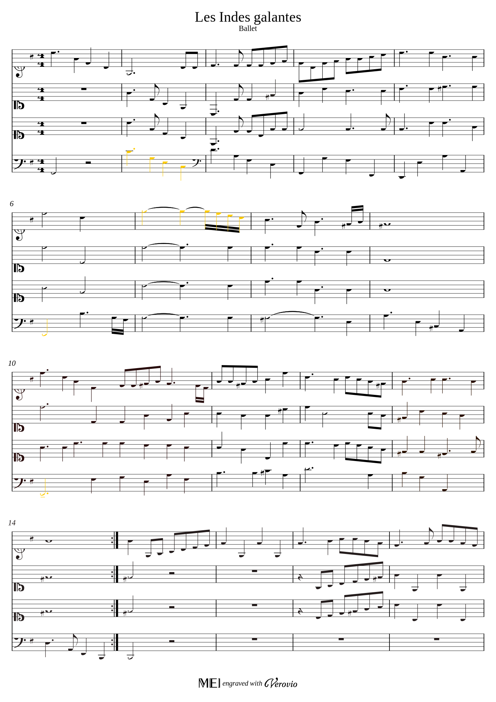
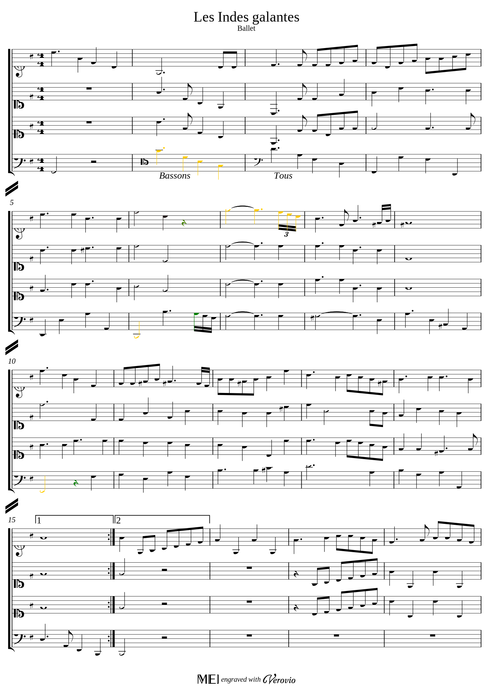
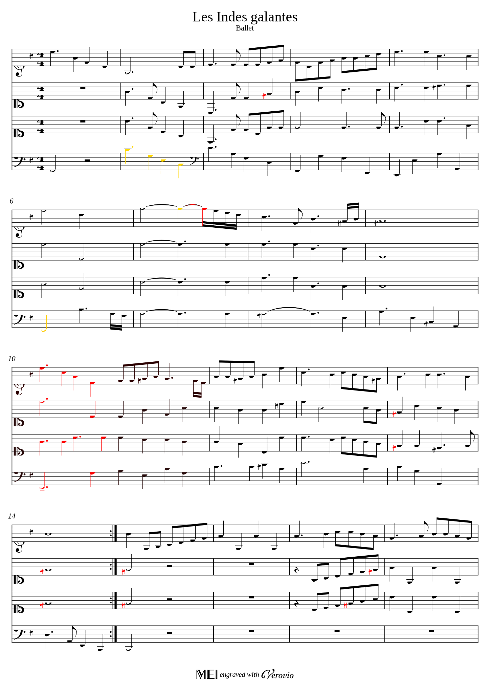
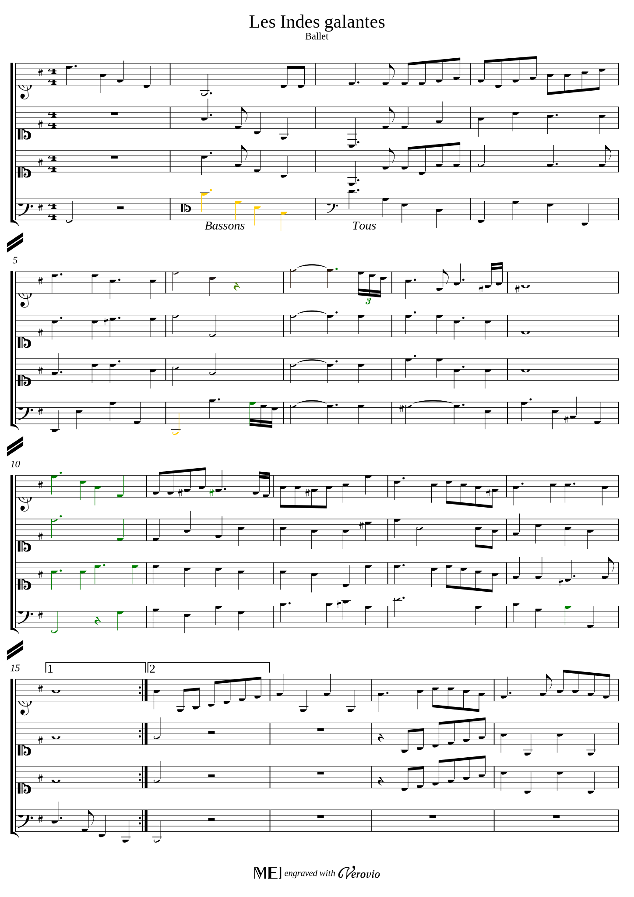

- A melodic mode, in which scores are interpreted as sequences of notes (triplets of pitch, onset and duration, like in a MIDI file) which are compared. Somehow, this mode detects differences on how the scores sound (during a MIDI play).
- A syntactic mode, in which the engraving (graphical) content of scores are compared (including ties, beams, dots, accidents etc). This mode detects differences on how the scores look.
Rameau Dataset
The MEI scores in the dataset were produced by members of the laboratory *REMOVED FOR ANONYMITY* during the *REMOVED FOR ANONYMITY* project. There are built from a corpus of the Bibliothèque nationale de France (BNF, Gallica) containing 21 ouvertures of Jean-Philippe Rameau.Every example is composed one page OMRized from the manuscripts, and its manual correction. In the experiments, we compute and display side by side the diffs between the OMRized version and the manual version. If one considers the manual version as a ground truth, then the displayed differences can be useful for a fine detection of OMR errors.
Due to copyright issues, most of the examples of the dataset cannot be displayed here. This page will be updated when these issues will be fixed.
Example 1 Rameau: Les Indes Galantes
original manuscript: https://gallica.bnf.fr/ark:/12148/btv1b8451564d/f15.imageMelodic difference
OMRized version
Manual correction (ground truth)
- on bar 2, part 4: the pitches of the notes are not the same due to a missing clef in OMR version (the change is marked in yellow in both versions)
- on bar 6, part 1: OMR missed a rest which is detected as added (green in the ground truth).
- on bar 6, part 4: the first note has wrong pitch in OMR. This is masked as a substitution (yellow). There is also a note missed by OMR at the end of the bar (in green in ground truth).
- on bar 7, part 1: rhythmic mistakes in the OMR version.
- on bar 14, part 4: one missing note in OMR version (in green in ground truth).
Syntactic difference
OMRized version
Manual correction (ground truth)
- on bar 6, part 1: same differences as in melodic mode for the missing rest.
- on bar 6, part 4: same differences as in melodic mode.
- on bar 7, part 1: the interpretation of the rhythmic difference differs from the melodic comparison. Note in particular the deleted note and the triplet notation.
- the OMR missed the barline between bar 10 and 11 (for all parts). this is interpreted as having the notes of the first bar (first 4 beats) deleted (in red in OMR version) and reinserted (in green in ground truth).
- on bar 14, part 4: same missing note as in melodic mode.
- in bars 15, 16, 18: the OMR misinterpreted a key signature as an accident on bar 14, and consequently the editor added accidents problems are due to the change of key signature.
About the missing barline: the logic of our diff procedure is to consider the parts as sequences of bars, and to perform bar-by-bar comparison based on the content of bars. The barlines themselves are not considered as a content in this procedure. That explains the displayed difference for bar 10.
More generally, following the above logic, the page layout (organisation of bars in staves and of staves in a page) is not compared by our diff procedure. Moreover, the trill marks are currently ignored by our procedure (that will be treated in a next version), as well as the changes of clef or key signature and also text indications.